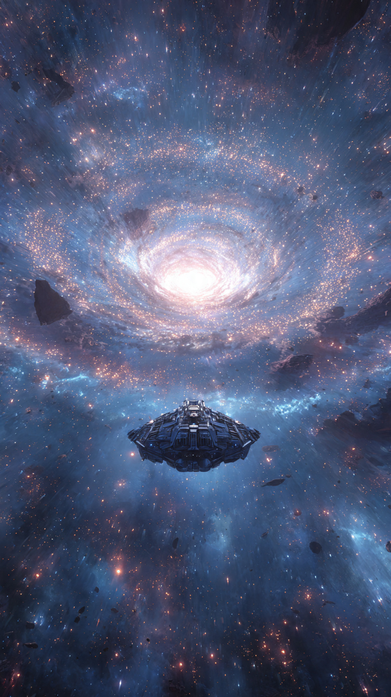
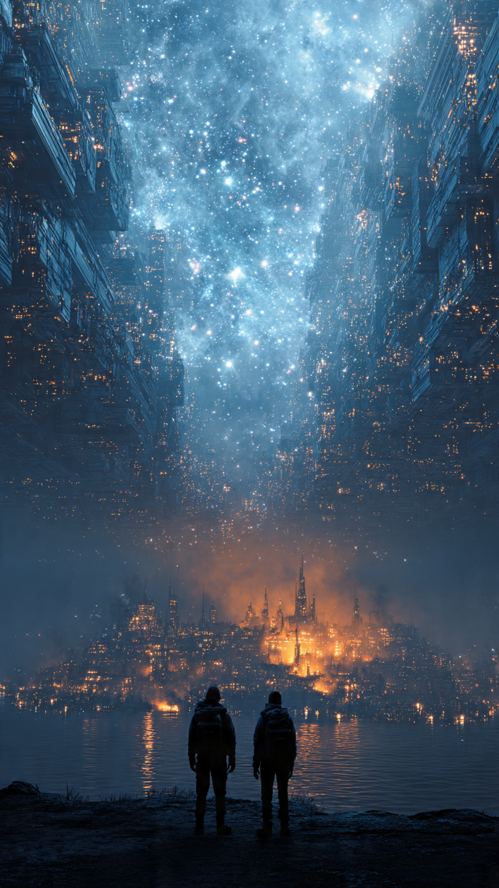

منذ آلاف السنين، رسم البشر خرائط للكون.
اكتشفوا النجوم.
والكواكب.
والمجرات البعيدة.
لكن كان هناك مكان واحد لا يوجد له أي أثر.
مجرة كاملة اختفت من جميع الخرائط.
لم تكن مدمرة.
ولم تنفجر.
بل اختفت وكأن أحدًا محا وجودها من التاريخ.
أطلق عليها العلماء اسم:
"المجرة الصامتة".
كان الاعتقاد السائد أنها مجرد أسطورة قديمة.
حتى التقطت محطة فضائية بعيدة إشارة غريبة.
لم تكن إشارة عشوائية.
كانت رسالة متكررة تحمل ثلاثة أرقام فقط.
وعندما حلل العلماء مسارها...
اكتشفوا أنها قادمة من مكان لا ينبغي أن يكون موجودًا.
من المجرة المختفية.
في مركز أبحاث الفضاء، اجتمع أفضل المستكشفين لدراسة الأمر.
وكان من بينهم رائدة فضاء شابة تُدعى نور.
كانت تؤمن أن الكون أكبر بكثير مما يعرفه البشر.
وعندما عُرضت عليها مهمة الذهاب إلى المجرة المجهولة، قالت:
"إذا كان هناك من يرسل لنا رسالة..."
"فعلينا أن نعرف لماذا."
تم تجهيز سفينة متطورة أطلق عليها اسم "أوريون".
وكانت مهمتها عبور منطقة من الفضاء لم تدخلها أي سفينة من قبل.
انطلقت السفينة بين النجوم.
وخلفها تركت الأرض.
والقمر.
وكل ما يعرفه البشر.
بعد أسابيع من السفر، بدأت الأجهزة تلتقط شيئًا غريبًا.
النجوم حولهم بدأت تختفي.
ليس لأنها انفجرت...
بل لأن شيئًا كان يخفي ضوءها.
قال أحد أفراد الطاقم:
"إننا ندخل منطقة غير موجودة في الخرائط."
اقتربت السفينة أكثر.
وفجأة ظهرت أمامهم بوابة هائلة من الطاقة.
لم تكن طبيعية.
كانت تشبه جدارًا شفافًا يفصل بين منطقتين من الكون.
وعندما عبروا من خلالها...
حدث شيء لا يمكن تفسيره.
اختفت كل الإشارات.
وتوقفت الساعات.
وتغيرت خريطة النجوم بالكامل.
فتح الطاقم أعينهم.
فوجدوا أنفسهم أمام منظر لم يره أي إنسان من قبل.
مجرة كاملة تلمع أمامهم.
مليارات النجوم.
ومدن فضائية ضخمة تدور حول كواكب ملونة.
لقد وجدوا المجرة التي اختفت من الخرائط.
لكن السؤال كان:
لماذا أخفى أحدهم مجرة كاملة عن الكون؟
📷 الصورة رقم 1

لم تستطع نور وفريقها إخفاء دهشتهم.
أمامهم كانت توجد مجرة كاملة، نابضة بالحياة، رغم أن كل الخرائط في الكون قالت إنها غير موجودة.
كانت النجوم تتحرك بتناغم غريب، وكأن المجرة نفسها كائن حي.
اقتربت سفينة "أوريون" من أحد الكواكب القريبة.
كان الكوكب مغطى بمدن عملاقة تطفو فوق سطحه، وممرات من الضوء تربط بين القارات.
لكن أكثر شيء أثار انتباههم...
هو أن سكان هذا العالم كانوا ينتظرون وصولهم.
ما إن هبطت السفينة، حتى اقترب منهم شخص طويل يرتدي ملابس مصنوعة من مادة شفافة تشبه الزجاج المضيء.
قال:
"مرحبًا بكم في مجرة إيلارا."
نظرت نور إليه بدهشة وقالت:
"كيف تعرفون لغتنا؟"
ابتسم وأجاب:
"لأننا نعرفكم منذ زمن طويل."
قادهم إلى مدينة ضخمة في قلب الكوكب.
كانت الجدران مليئة بصور لحضارات من كواكب مختلفة.
لكن في منتصف القاعة كانت توجد صورة للأرض.
توقفت نور أمامها.
وسألت:
"لماذا لديكم صورة لكوكبنا؟"
نظر إليها القائد وقال:
"لأنكم السبب في اختفاء مجرتنا."
ساد الصمت.
لم يفهم أحد ما يقصده.
فقال:
"منذ ملايين السنين، اكتشف سكان هذه المجرة طاقة قادرة على تغيير الكون."
"لكن استخدامها كان خطرًا."
"لذلك أخفينا المجرة بالكامل حتى لا يصل إليها أحد."
أشار إلى غرفة ضخمة تحت المدينة.
وفي داخلها كانت توجد كرة عملاقة من الطاقة الزرقاء.
كانت تتحرك ببطء وكأنها تحتوي على قلب نابض.
قال:
"هذه هي نواة الخلق."
"طاقة تستطيع إنشاء نجوم جديدة..."
"لكنها تستطيع أيضًا تدمير مجرات كاملة."
سألت نور:
"ولماذا أرسلتم الإشارة لنا؟"
صمت القائد للحظة.
ثم قال:
"لأن الحاجز الذي يخفي المجرة بدأ ينهار."
"وخلال أيام قليلة، ستجد قوى أخرى طريقها إلى هنا."
وفجأة اهتز الكوكب.
وانطفأت بعض الأضواء في المدينة.
ظهرت على الشاشات مركبات ضخمة تقترب من حدود المجرة.
لم تكن سفنًا عادية.
كانت أسطولًا من حضارة مجهولة.
قال القائد بخوف:
"لقد وجدونا."
ثم نظر إلى نور وقال:
"الآن أصبح اختيارك هو الذي سيحدد مستقبل الكون."
📷 الصورة رقم 2

بدأت سفن الأسطول المجهول تحاصر مجرة إيلارا.
كانت أعدادها لا تُحصى، وتتحرك بين النجوم كأنها موجة من الظلام.
داخل المدينة، انتشر الخوف بين السكان.
فهم يعلمون أن سقوط الحاجز يعني أن نواة الخلق ستصبح في يد من يبحث عن القوة فقط.
أما نور، فكانت تقف أمام الكرة الزرقاء العملاقة وتفكر.
قال لها قائد المجرة:
"إذا أخذوا النواة، فلن يبقى مكان آمن في الكون."
سألته:
"ولماذا لم تستخدموها للدفاع عن أنفسكم؟"
أجاب:
"لأن الطاقة التي تنقذ عالمًا..."
"قد تدمر عوالم أخرى."
اقتربت نور من النواة.
شعرت بطاقة هائلة تمر عبر جسدها.
وفجأة ظهرت أمامها صور من الماضي.
رأت حضارات قديمة تستخدم هذه الطاقة لصنع النجوم.
ثم رأت كيف تحولت الطموحات إلى حروب.
فهمت أن المشكلة لم تكن في القوة نفسها...
بل في من يستخدمها.
وصلت سفن العدو إلى داخل حدود المجرة.
بدأت المعركة.
انطلقت أشعة الطاقة بين النجوم.
وتحركت المدن الفضائية للدفاع عن نفسها.
لكن أسطول المهاجمين كان أقوى بكثير.
قال أحد العلماء:
"لن نصمد طويلًا."
نظرت نور إلى القائد وقالت:
"هناك طريقة أخرى."
"لماذا نخفي النواة أو نحارب من أجلها؟"
"لماذا لا نجعلها غير قابلة للاستخدام من أجل السيطرة؟"
فهم القائد ما تقصده.
لكن قال:
"هذا يعني فقدان أعظم اكتشاف في تاريخ الكون."
ابتسمت نور وقالت:
"أحيانًا يكون أعظم قرار..."
"هو التخلي عن القوة."
دخلت نور إلى غرفة النواة.
وبدأت بإعادة برمجة الطاقة.
لم تجعلها سلاحًا.
بل حولتها إلى مصدر نور ينتشر في أنحاء المجرة.
تغير لون السماء.
وبدأت النواة تطلق موجات طاقة هادئة.
عندما وصلت إلى سفن العدو، لم تدمرها.
بل كشفت الحقيقة أمام قادتها.
أظهرت لهم صورًا لما سيحدث إذا استخدموا تلك القوة للسيطرة.
رأوا عوالم تحولت إلى رماد.
فتوقفوا.
بعد لحظات طويلة من الصمت...
انسحب الأسطول.
لم ينتصر أحد بالحرب.
بل انتصر الجميع بالحكمة.
عاد الحاجز حول المجرة، لكنه لم يعد يخفيها تمامًا.
فقد أصبحت إيلارا تظهر لمن يبحث عنها بدافع المعرفة، لا الطمع.
عادت نور إلى الأرض بعد رحلة طويلة.
وعندما سألها العلماء:
"هل وجدت المجرة المختفية؟"
ابتسمت وقالت:
"لم أجد مجرة فقط..."
"وجدت درسًا."
"الكون لا يخفي أسراره خوفًا منا..."
"بل ينتظر أن نكون مستعدين لفهمها."
ومنذ ذلك اليوم، بقيت مجرة إيلارا علامة في تاريخ البشر.
ليس لأنها كانت أعظم مكان اكتشفوه...
بل لأنها علمتهم أن أعظم قوة في الكون ليست القدرة على السيطرة.
بل القدرة على الاختيار.